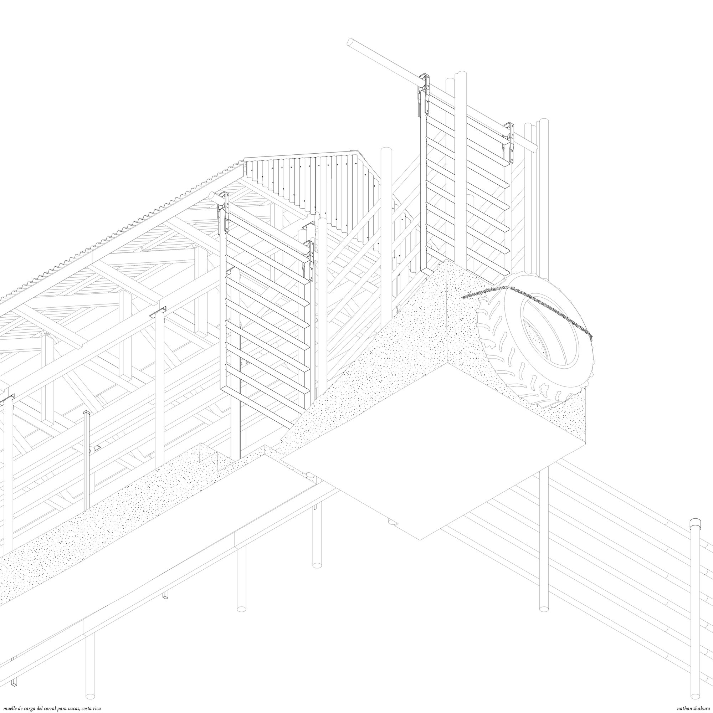
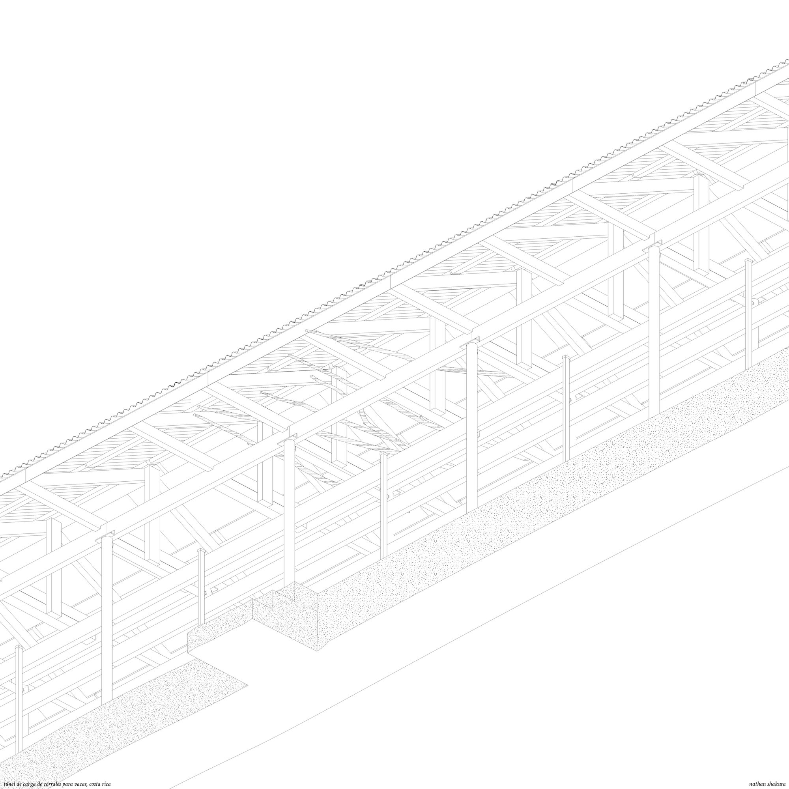
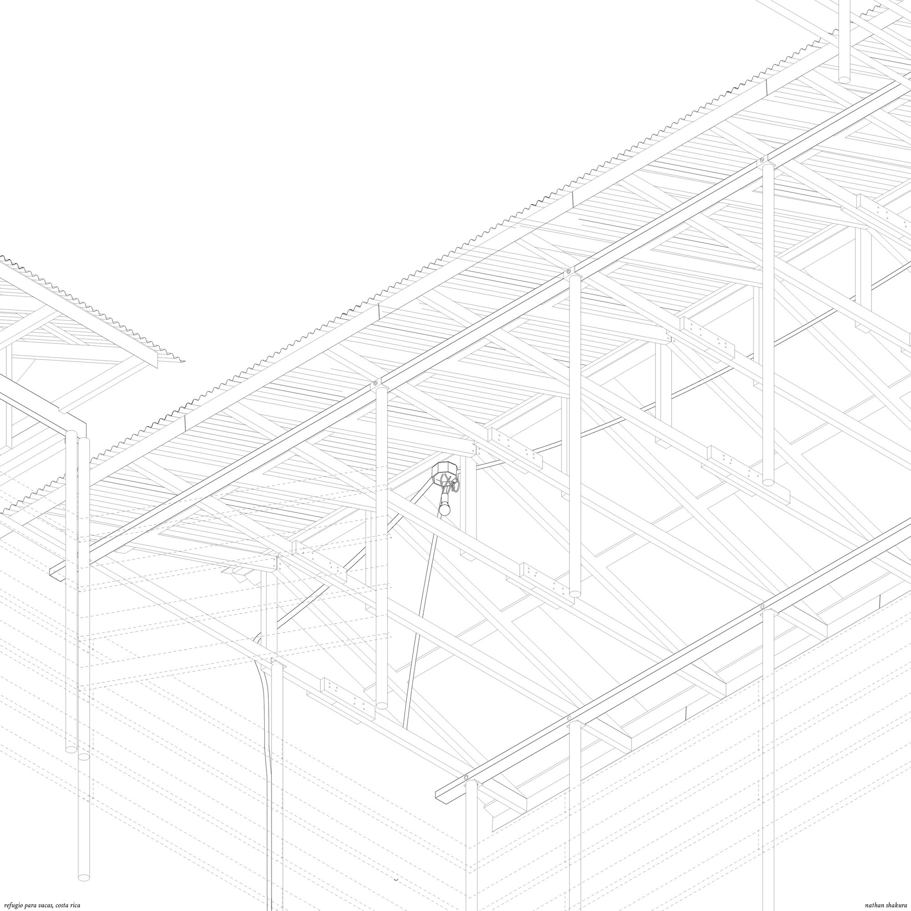
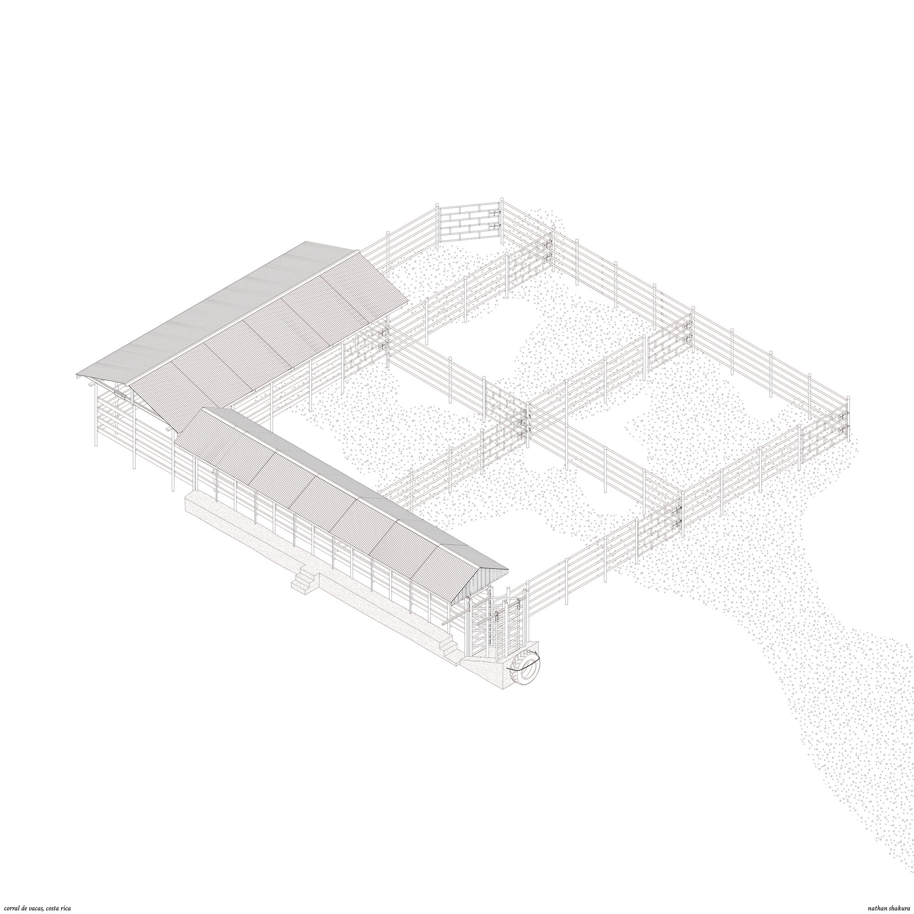
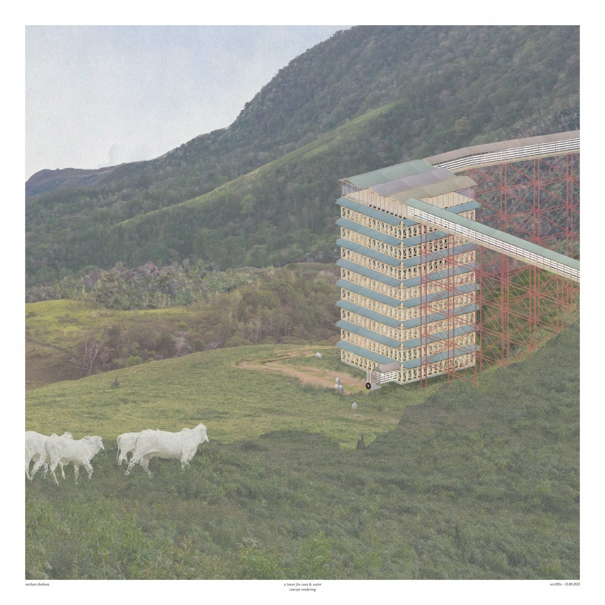
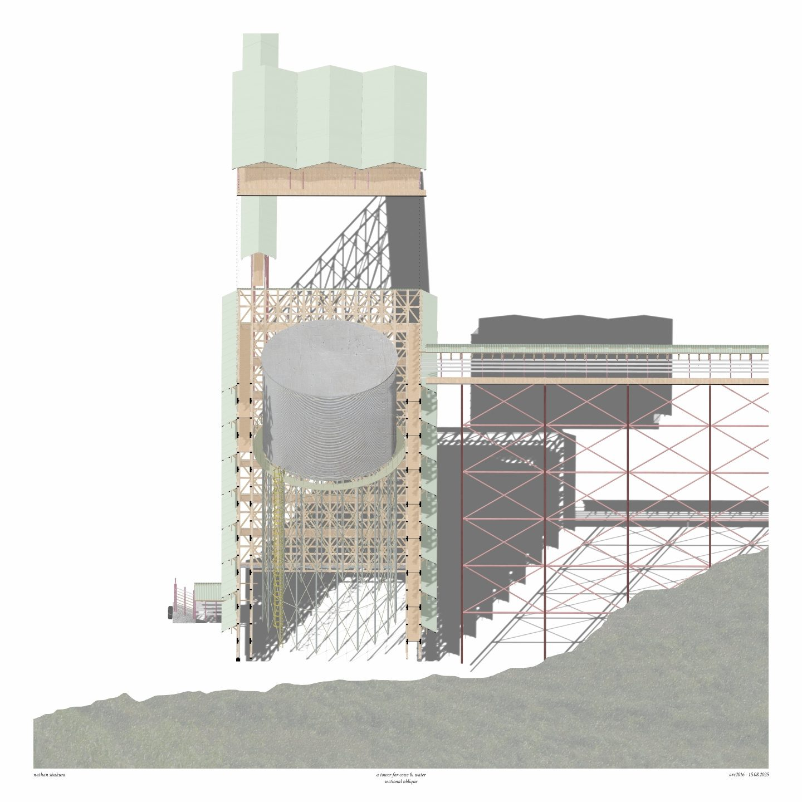
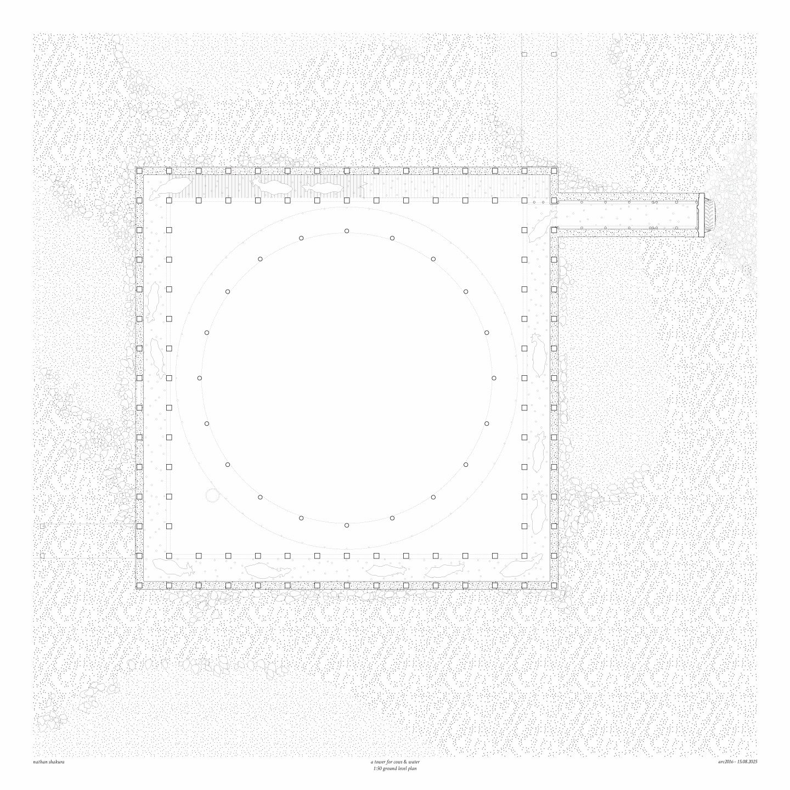
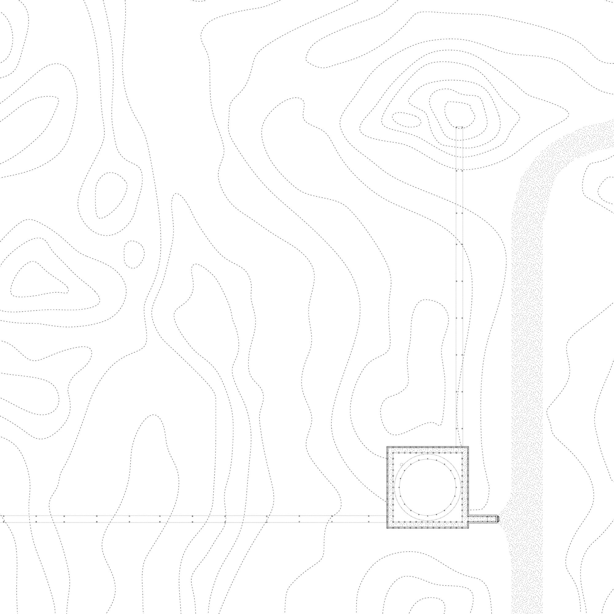

a tower for cows
During this travel studio in Costa Rica, I immersed myself in the landscape and vernacular agricultural forms and analysed from both a site of ecological challenge and cultural knowledge. Guanacaste, Costa Rica is defined by its cycles of drought and flooding, where water scarcity and sudden inundation are shaping how farmers work and produce food. Our work began with a process of discovery, travelling the land, observing the many ecologies, and documenting the vernacular logics embedded in local construction.
One recurring typology we studied was the cattle pen (corral), a deceptively simple yet highly adaptive structure found throughout Costa Rica. Constructed from wood and steel, arranged in modular rhythms of posts and rails, these enclosures embody a vernacular response to both ecological and agricultural demands.
Building on this discovery, my design intervention addressed the pressing issues of flooding and drought in Guanacaste, proposing an adaptive water infrastructure rooted in vernacular principles. I developed a system that combined terraced enclosures and modular timber frameworks, reinterpreting the logic of the cattle pen as a resilient architecture for water management. These structures functioned both as water-retention basins during the rainy season and as shade and soil-preservation devices during drought, supporting agricultural resilience while reactivating degraded landscapes.
The project foregrounded how vernacular forms can be re-scaled and re-purposed to meet contemporary challenges of climate adaptation. Through detailed drawings, site-based observation, and material studies, I explored how the cultural intelligence embedded in rural building practices can serve as a foundation for sustainable and low-footprint interventions today.







